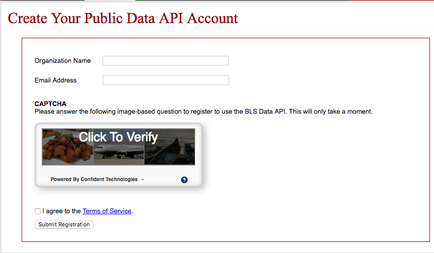

This key is used to identify calls to the API to you. So keep this private so that it cannot be abused.
For the bureau of labor statistics, there are two ways to make API calls. For simplicity’s sake, we will be using version 1 of their API, which does not require you to have an API key. However, at the end you may use version 2 of their API so that you can obtain more information, which requires an API key.
Go to http://data.bls.gov/registrationEngine/ in order to register.

Enter your email address and your organization name (you can enter your name here). They will send you an email with you API key and a confirmation link that you must click to verify your identity
Great! Lets move on!
previous next